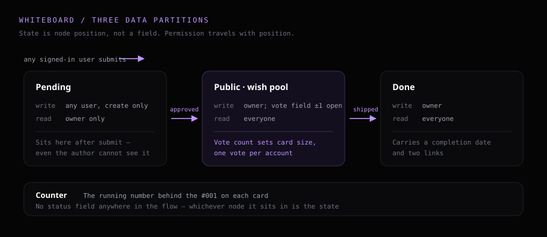
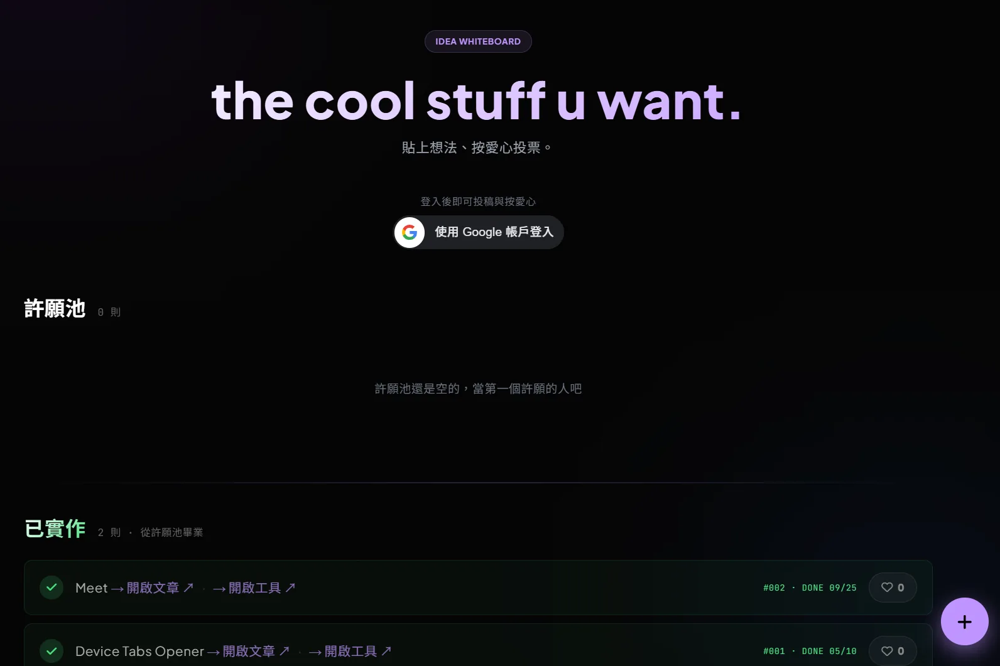

How the wish board on this site came about: the original idea, how the data got split up, where I got stuck, and why it is still running.
Writing code is a hobby for me. And a hobby that only ever serves its owner feels like a waste — I would like it to carry some use and some value. The other thing I wanted was a channel: whoever lands on this site should have somewhere to say “I want to read that one”.
So Whiteboard happened. On the evening of 2026-05-09 I put up an empty shell: a hero, two sections, one button in the bottom-right corner and a submit dialog, with no behaviour behind any of it. The next day I filled in the whole core in one sitting.
# What I set out to build
The idea was plain: a public wall where any signed-in visitor can post an idea, everyone else hearts the ones they want, and whatever I finish sinks to the bottom as a record you can scroll back through. Three states, one direction of travel, nothing more.
The one thing worth thinking through up front was spam. Captchas, rate limits, keyword filters — each of those catches part of it and each adds maintenance, and a site at this traffic level has no use for the full set. So I compressed it into one sentence: anyone may submit, and whether it goes public is my call.
# Architecture: three nodes are three states
The data lives in Firebase Realtime Database — a Google-hosted database the browser talks to directly, with permissions declared in its own Security Rules file, node by node, saying who may read and who may write. This site has no backend, so that single file carries the entire permission model.
My first draft kept everything under one tree and hid the pending items behind a field. That road is closed: read permission cascades downward, so opening the parent opens everything beneath it. The rewrite splits the data into three separate nodes, which turns approval into moving a record from one node to the next.

With that split there is no status field left to maintain anywhere in the flow. The pending node reads to the owner alone, so a submission stays invisible until it is approved — invisible to the person who sent it, too.
# How the tool itself is put together
One fixed button sits in the bottom-right corner; it opens a dialog with a one-line title and an optional few sentences of detail. Both fields carry a length cap checked twice, in the page and in the database rules — the first catches slips, the second catches anyone calling the API around the interface.
Hearts are one per account, press again to take it back. Two fields and one rule do the work: a total that the rule only lets move by one in either direction, and a per-person cell that the rule only lets its own owner write. The count changes on screen the moment you press, and rolls back with the icon if the write fails.

The pool is laid out as a bento grid where votes decide the size of a card: every threshold crossed bumps it up a width, the smallest taking a quarter of a row and the top one able to eat most of a row plus an extra row of height, with another frame added past the top threshold. The wall keeps reshaping itself as people vote, and I maintain no ordering config on my side.
Last comes a review page only I can see, with four actions: pending list, approve, reject, graduate. A submitter's contact address travels with the record from pending all the way to shipped, so there is someone to write back to.
# Where it got stuck
Sign-in broke, and it took two fixes
The first version used Firebase's built-in popup sign-in. On a local Live Server everything worked; on GitHub Pages the popup refused to close and the page threw one line, “The requested action is invalid”, with no stack and no code.
The cause is a header called COOP. It severs the reference between a page and the windows it opens so neither can drive the other, and GitHub Pages sends it by default. With the reference gone, the popup finishes signing in with no way to hand the result back, and no way to close itself.
That day I routed around it with redirect, which navigates the whole page away and back — it works, and it feels bad. The real fix landed three weeks later: Google Identity Services issues a credential inside the page, and the same page exchanges it for an identity the database recognises, with no second window at any point.
This one is untestable locally. Production and localhost send different headers, which makes them two different runtimes.
Two database connections collided
The heart button on the home page had already opened a Firebase connection, and the whiteboard code opening a second one collided with it, because the default connection allows one instance per site. The fix is to pass a name at initialisation so it becomes an independent named connection — same config, two instances that leave each other alone.
# Finished, and still in use
From the empty shell on 05-09 to wrapping up on 05-10, the core took a day; an English version followed, and June brought the sign-in flow it runs today. It is still on the site, I still keep my own to-dos in it, and I will keep adding to it as things come up.
This was my first time building something that takes submissions from strangers, so there are certainly things I have not thought through. The fastest way to reach me is to post on the board itself — I see all of it. If you would rather send a note or read the code, the whole site is public on GitHub, and an issue or a star both reach me.
# Links
- • Whiteboard — open it and drop an idea in
- • Meet — the second tool on the same setup
- • Google Identity Services — official guide
- • Cross-Origin-Opener-Policy — MDN
# Tech stack
- Frontend: vanilla JavaScript and Tailwind, one file, no framework and no bundler
- Hosting: GitHub Pages
- Data and permissions: Firebase Realtime Database with Security Rules; owner status comes from matching one fixed account
- Sign-in: Google Identity Services, in-page, no popup
- Live updates: listeners on the public and shipped nodes redraw the page whenever the data moves
- Votes: a transaction for the total, plus a per-person cell recording who has voted
- Shared: same Firebase project and same rules file as Meet, one top-level node each